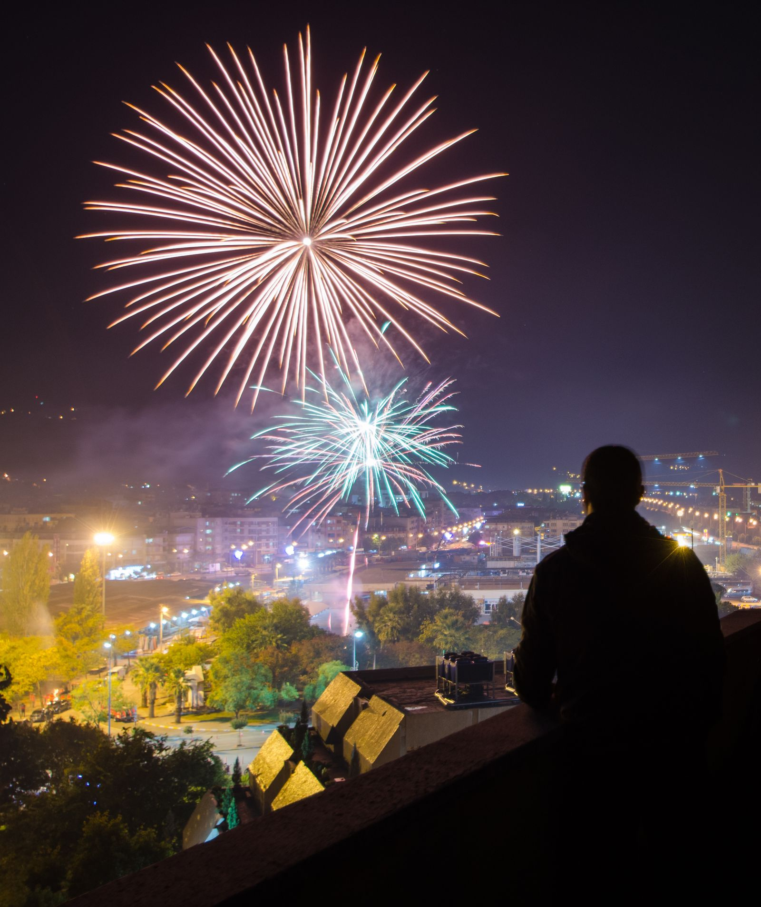

03 · About the photographer
The man at the cold position.
The best seat at any display is the one nobody wants: behind the safety line, under the shells, in the cold, where the crowd is a rumour behind you and the sky does what the cue sheet said it would. I've stood at some version of that position for fourteen New Years.

▸ How the desk started
I came to this sideways, through press work. In 2011 a picture desk sent me to photograph Hogmanay from the crowd on Princes Street, and I came back with forty frames of the backs of other people's phones. The fireworks were in perhaps six of them. I decided that if the photograph mattered, the standing still had to be arranged in advance — with the people firing the shells, not against them.
So since 2012 the method hasn't changed: survey in daylight, agree the distances, write the cue sheet, fire one considered frame every ten seconds, log everything. Forty-seven displays later the logbooks are the portfolio. Any client can read them.
“Amateurs photograph the burst. The burst photographs itself. My job is the three seconds either side of it — and being somewhere I'm allowed to stand when it happens.”
Most of the year the desk is quiet, and that's the point. A fireworks photographer works perhaps twenty nights a year; the other three hundred and forty-five are surveys, cue sheets, print-making and keeping positions warm with the firing teams who trust me inside their plans. I hold public liability insurance to £10 million, my positions are agreed in writing on the display's own site plan before every show, and I have never shot a display I didn't survey first. If a date is inside the 21-day survey window, I say so and turn it down — the planner on the desk page will tell you the same thing, because it reads from the same card.
When I'm not at a position I'm printing. Editions are made slowly, by hand, and the log entry travels with each print — cue, position, exposure — because a fireworks photograph without its data is just a pretty accident.